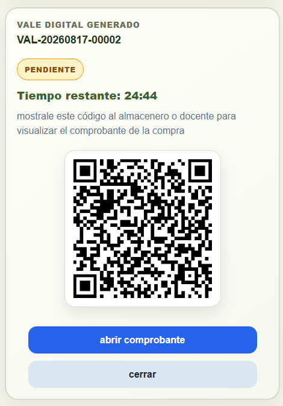
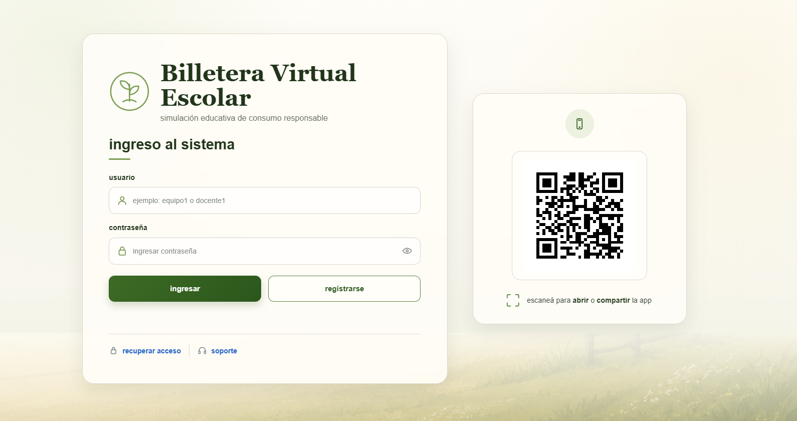
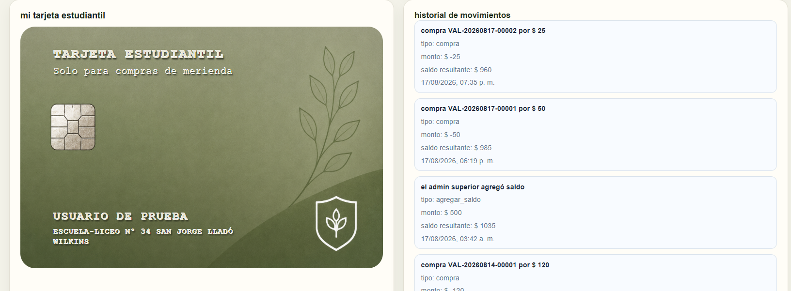

¿Puede una billetera virtual inteligente ayudar a los estudiantes a comprender cómo administrar un saldo y tomar decisiones de consumo más responsables?
Club de Ciencia 2026 · Categoría Churrinche
Billetera Virtual Inteligente
Una simulación educativa para aprender a administrar un saldo, reflexionar antes de comprar y comprender cómo funcionan las transacciones digitales.
Institución
Escuela Rural N.º 34
Localidad
San Jorge, Durazno
Área
Pensamiento Computacional
Importante
No utiliza dinero real



Saldo completamente ficticio
Aprendizaje mediante simulación
Diseño pensado para celulares
Punto de partida
La investigación detrás de la aplicación
El proyecto no busca reemplazar una billetera real. Propone un entorno educativo controlado donde sea posible experimentar, equivocarse y conversar sobre las decisiones tomadas.
Aprender haciendo
El uso de una simulación con dinero ficticio permitirá comprender mejor la administración de un presupuesto y reflexionar antes de realizar una compra.
Unir programación y educación financiera
Diseñar una herramienta educativa que simule el uso de una billetera digital y permita trabajar saldo, compras, movimientos y consumo responsable.
Objetivos específicos
Representar de forma clara el saldo disponible y los movimientos realizados.
Aplicar conceptos de programación en un problema cercano a la vida cotidiana.
Simular compras sin utilizar dinero ni información financiera real.
Evaluar posteriormente la experiencia y las decisiones de los estudiantes.
Cómo funciona
Un sistema con diferentes responsabilidades
Cada rol observa solamente las herramientas que necesita. Esto permite comprender que una misma aplicación puede responder de forma diferente según quién la utiliza.
Titular
Consulta su saldo ficticio, recorre el catálogo, arma el carrito, confirma compras y revisa su historial.
Administrador
Gestiona productos, cargas de saldo, usuarios y reglas generales de funcionamiento.
Comercio o docente
Consulta el comprobante asociado al vale QR. La validación final del vale continúa en desarrollo.
Administrador superior
Supervisa administradores, configuración institucional y estadísticas generales del sistema.
Recorrido de una compra
Del catálogo al comprobante QR
- 1 El titular ingresa y consulta su saldo.
- 2 Selecciona productos y confirma el carrito.
- 3 La compra descuenta saldo ficticio.
- 4 Se genera un vale QR con tiempo limitado.
- 5 El comercio o docente consulta el comprobante.
Materiales y métodos
Cómo se construyó el prototipo
Identificación del problema
Se buscó una forma segura de practicar decisiones de compra y administración sin utilizar dinero real.
Diseño de la experiencia
Se definieron roles, pantallas, productos, reglas, saldos ficticios y el recorrido de una compra.
Desarrollo del prototipo
Se programó una aplicación pensada principalmente para celulares y se incorporó autenticación y persistencia de datos.
Pruebas y ajustes
Se probaron accesos, compras, historial, paneles administrativos y generación de vales QR.
Materiales
Recursos utilizados
Tecnologías
Herramientas de desarrollo
Resultados actuales
Un prototipo funcional y conectado
Las pruebas técnicas permitieron comprobar el funcionamiento de los principales recorridos de la aplicación y la permanencia de los datos entre diferentes sesiones.
- Registro e ingreso de usuarios.
- Saldo ficticio, catálogo y carrito de compras.
- Tarjeta estudiantil e historial de movimientos.
- Roles y paneles administrativos diferenciados.
- Persistencia de información mediante Supabase.
- Generación de vales digitales con código QR.
Evidencias del desarrollo
Tres momentos de la experiencia
Estas pantallas muestran el acceso al sistema, la información del titular y la generación del vale digital.
Las cuentas, productos, saldos y transacciones mostrados son datos ficticios creados exclusivamente para las pruebas del proyecto.
El equipo
Club de Ciencia de la Escuela Rural N.º 34
San Jorge · Departamento de Durazno · Uruguay
Estudiante
Ángel Maciel
Estudiante
Nicolás Garay
Orientador
Marcos Juárez
Referencias y documentación
Fuentes consultadas
Banco Central del Uruguay
Educación financiera para jóvenes
MDN Web Docs
Documentación de tecnologías web
Supabase
Documentación de base de datos y autenticación
Dirección Nacional de Educación
Reglamento de Clubes de Ciencia 2026